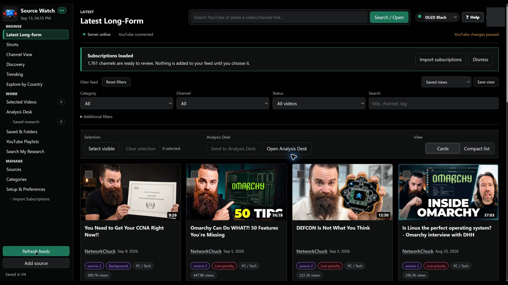

YOUR YOUTUBE RESEARCH WORKSPACE
Go beyond watching.
Investigate.
Follow sources, discover perspectives, and turn a video's transcript into a deeper examination of its claims.
Prepare the transcript and a detailed prompt for ChatGPT in a few clicks. Examine credibility, challenge the argument, and identify what needs fact-checking. Keep the useful research on your computer.
Windows preview · Local-first storage · YouTube connection required for the connected workflow

Build your source feed
Import selected subscriptions, use suggested categories, or organize your own. Explore channels and regional perspectives beyond your feed.
Inspect the argument
Start with Quick Brief, then prepare a transcript and critical-analysis prompt. Open ChatGPT, review the packet, and submit it yourself.
Keep useful research
Save videos, group a selection into folders, and keep results and verification notes in named workspaces. Export research as Markdown.
SEE THE REAL WORKFLOW
One complete walkthrough.
12:08 · 4K source · English narration
Setup, Google consent, actual clicks and research.
The guide is being prepared for YouTube.
No YouTube player is loaded until you choose to play it.
WRITTEN INSTRUCTIONS
From first launch to your first investigation.
Private-beta onboarding is not yet open for a general download. The steps below describe the V4 workflow demonstrated in the video. Invited testers need a beta build and working Google connection setup from the organizer.
Open the supplied executable
Save the supplied file in a folder you control, open it, and follow its instructions. Source Watch opens its dashboard in your browser. On a fresh profile, the welcome guide opens automatically.
The filmed build is a portable preview, not an installer wizard. Use only the file supplied for your beta invitation. If Windows warns about the file, check the version and publisher information with the organizer; do not disable Windows protection.
Connect YouTube first
Choose Start setup, then Connect YouTube. This lets Source Watch load the subscriptions and playlists belonging to the account you want to use. Sign in on Google's own page, not inside a Source Watch password form.
Choose the correct Google account and, if offered, the personal or brand identity containing your subscriptions.
Google's warning, permissions and Continue buttons
A private test build may display an unverified-app notice. Continue only if you are an invited tester, the app matches the expected Source Watch build, and you understand the requested access. If it is unfamiliar, choose the safe exit and ask the organizer.
Review the application name and every permission. The current workflow requests viewing and management access to YouTube, as well as account identity information. It is not a read-only connection. Management access enables supported account actions such as playlist updates or unsubscribing when you explicitly request them.
On a first connection, Google may show permission checkboxes: review and select the permissions required for the workflow before choosing Continue. A previously connected account may instead show an existing-access summary. Open the service details, review them, choose Done if shown, then Continue.
Return to Source Watch, verify the connected account, and wait for subscriptions to load. The video records an existing-access summary; it does not recreate first-time checkboxes.
Choose which subscriptions become sources
Import the channels you want to monitor. Keep suggested categories, adjust them, or create your own. For a large library, work through the pages: Select visible selects the eligible channels on the current page, not automatically every subscription. Assign categories and confirm the import.
Refresh and inspect your feed
Refresh to retrieve recent uploads. Browse Latest Long-form or Shorts and narrow by category, channel, status or search. Open Quick Brief for an extractive first inspection. Check whether it is based on a transcript or just limited metadata; it is not an AI truth verdict.
Prepare the transcript and deep-analysis prompt
Choose Send to Analysis Desk, then Copy Deep + Transcript. Review the source material and structured prompt. It helps you examine credibility, evidence, weak arguments and claims needing independent verification. Caption-language selection and manual transcript entry are available when needed.
Click Open ChatGPT. If you are signed in there in that browser, your signed-in account opens. Otherwise sign in on ChatGPT. Paste the packet, review it, and send it. Ask follow-up questions and check cited evidence yourself. An AI answer does not guarantee a claim is true.
Save, select and organize
Use Save to retain a video locally. Select multiple videos using their individual checkboxes, watch the selected count, and open Selected Videos. Choose a folder or batch action. Local saves and folders are separate from YouTube playlist changes; check the destination before confirming a YouTube action.
Keep the investigation, not only the videos
Copy useful ChatGPT output back into Save analysis result manually. Add verification sources and dates. Save a named workspace in Saved research, reopen it later, or export it as Markdown. Search My Research helps retrieve transcripts, notes and results. Source Watch does not automatically retrieve ChatGPT conversations.
Go beyond your existing sources
In Discovery, choose More evidence, Challenge this or Better source, and select the search scope. In Trending, choose a country and YouTube category. Explore by Country adds topics, language, recency and depth. These results are useful signals, not a representative survey of what a country's population considers important.
In Channel View, choose a monitored channel, scroll through indexed videos, and use Search channel videos. Check archive coverage: a partial local index is not the channel's complete history.
Make the workspace comfortable
Choose a light or dark theme in the appearance settings. Your research remains in place. Use Help for reminders of the available pages and actions.
WINDOWS / PRIVATE BETA
Get Source Watch.
The general beta download is not available yet.
The tutorial executable is not the distribution package. A clean release build, new-tester Google connection and clean-Windows checks must be completed before a download link is enabled.
Download for WindowsPRIVACY, WITHOUT THE SMALL PRINT
Your working library stays with you.
Stored locally
Sources, local saves, notes, cached transcripts, saved research and authorization tokens are stored on your computer, rather than in a separate Source Watch cloud account. Protect your computer and backups.
Connected when needed
Local-first does not mean fully offline. Google and YouTube provide authorization, account services and remote material. Text you choose to send to ChatGPT is handled under that service's own settings.
You choose what leaves
Source Watch does not automatically submit your transcripts to ChatGPT. Review before pasting or sending. Sync services such as OneDrive can copy local folders. Local storage is not a promise of encryption or a secure vault.
This website has no added analytics or account system. Playing the guide loads YouTube's player and connects to YouTube. Website hosting and external services may process connection information under their own policies.